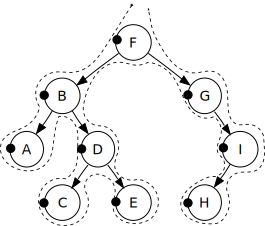
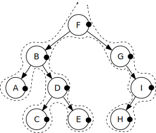

| Top |
The GNode struct and its associated functions provide a N-ary tree data structure, where nodes in the tree can contain arbitrary data.
To create a new tree use g_node_new().
To insert a node into a tree use g_node_insert(),
g_node_insert_before(), g_node_append() and g_node_prepend().
To create a new node and insert it into a tree use
g_node_insert_data(), g_node_insert_data_after(),
g_node_insert_data_before(), g_node_append_data()
and g_node_prepend_data().
To reverse the children of a node use g_node_reverse_children().
To find a node use g_node_get_root(), g_node_find(),
g_node_find_child(), g_node_child_index(), g_node_child_position(),
g_node_first_child(), g_node_last_child(), g_node_nth_child(),
g_node_first_sibling(), g_node_prev_sibling(), g_node_next_sibling()
or g_node_last_sibling().
To get information about a node or tree use G_NODE_IS_LEAF(),
G_NODE_IS_ROOT(), g_node_depth(), g_node_n_nodes(),
g_node_n_children(), g_node_is_ancestor() or g_node_max_height().
To traverse a tree, calling a function for each node visited in the
traversal, use g_node_traverse() or g_node_children_foreach().
To remove a node or subtree from a tree use g_node_unlink() or
g_node_destroy().
GNode *
g_node_new (gpointer data);
Creates a new GNode containing the given data. Used to create the first node in a tree.
GNode *
g_node_copy (GNode *node);
Recursively copies a GNode (but does not deep-copy the data inside the
nodes, see g_node_copy_deep() if you need that).
gpointer (*GCopyFunc) (gconstpointer src,gpointer data);
A function of this signature is used to copy the node data when doing a deep-copy of a tree.
Since: 2.4
GNode * g_node_copy_deep (GNode *node,GCopyFunc copy_func,gpointer data);
Recursively copies a GNode and its data.
Since: 2.4
GNode * g_node_insert (GNode *parent,gint position,GNode *node);
Inserts a GNode beneath the parent at the given position.
GNode * g_node_insert_before (GNode *parent,GNode *sibling,GNode *node);
Inserts a GNode beneath the parent before the given sibling.
GNode * g_node_insert_after (GNode *parent,GNode *sibling,GNode *node);
Inserts a GNode beneath the parent after the given sibling.
#define g_node_append(parent, node)
Inserts a GNode as the last child of the given parent.
GNode * g_node_prepend (GNode *parent,GNode *node);
Inserts a GNode as the first child of the given parent.
#define g_node_insert_data(parent, position, data)
Inserts a new GNode at the given position.
#define g_node_insert_data_after(parent, sibling, data)
Inserts a new GNode after the given sibling.
#define g_node_insert_data_before(parent, sibling, data)
Inserts a new GNode before the given sibling.
#define g_node_append_data(parent, data)
Inserts a new GNode as the last child of the given parent.
#define g_node_prepend_data(parent, data)
Inserts a new GNode as the first child of the given parent.
void
g_node_reverse_children (GNode *node);
Reverses the order of the children of a GNode. (It doesn't change the order of the grandchildren.)
void g_node_traverse (GNode *root,GTraverseType order,GTraverseFlags flags,gint max_depth,GNodeTraverseFunc func,gpointer data);
Traverses a tree starting at the given root GNode.
It calls the given function for each node visited.
The traversal can be halted at any point by returning TRUE from func
.
func
must not do anything that would modify the structure of the tree.
root |
the root GNode of the tree to traverse |
|
order |
the order in which nodes are visited - |
|
flags |
which types of children are to be visited, one of
|
|
max_depth |
the maximum depth of the traversal. Nodes below this depth will not be visited. If max_depth is -1 all nodes in the tree are visited. If depth is 1, only the root is visited. If depth is 2, the root and its children are visited. And so on. |
|
func |
the function to call for each visited GNode |
|
data |
user data to pass to the function |
gboolean (*GNodeTraverseFunc) (GNode *node,gpointer data);
Specifies the type of function passed to g_node_traverse(). The
function is called with each of the nodes visited, together with the
user data passed to g_node_traverse(). If the function returns
TRUE, then the traversal is stopped.
void g_node_children_foreach (GNode *node,GTraverseFlags flags,GNodeForeachFunc func,gpointer data);
Calls a function for each of the children of a GNode. Note that it
doesn't descend beneath the child nodes. func
must not do anything
that would modify the structure of the tree.
node |
a GNode |
|
flags |
which types of children are to be visited, one of
|
|
func |
the function to call for each visited node |
|
data |
user data to pass to the function |
void (*GNodeForeachFunc) (GNode *node,gpointer data);
Specifies the type of function passed to g_node_children_foreach().
The function is called with each child node, together with the user
data passed to g_node_children_foreach().
GNode * g_node_find (GNode *root,GTraverseType order,GTraverseFlags flags,gpointer data);
Finds a GNode in a tree.
root |
the root GNode of the tree to search |
|
order |
the order in which nodes are visited - |
|
flags |
which types of children are to be searched, one of
|
|
data |
the data to find |
GNode * g_node_find_child (GNode *node,GTraverseFlags flags,gpointer data);
Finds the first child of a GNode with the given data.
node |
a GNode |
|
flags |
which types of children are to be searched, one of
|
|
data |
the data to find |
gint g_node_child_index (GNode *node,gpointer data);
Gets the position of the first child of a GNode which contains the given data.
gint g_node_child_position (GNode *node,GNode *child);
Gets the position of a GNode with respect to its siblings.
child
must be a child of node
. The first child is numbered 0,
the second 1, and so on.
GNode * g_node_nth_child (GNode *node,guint n);
Gets a child of a GNode, using the given index.
The first child is at index 0. If the index is
too big, NULL is returned.
GNode *
g_node_first_sibling (GNode *node);
Gets the first sibling of a GNode. This could possibly be the node itself.
GNode *
g_node_last_sibling (GNode *node);
Gets the last sibling of a GNode. This could possibly be the node itself.
guint
g_node_depth (GNode *node);
Gets the depth of a GNode.
If node
is NULL the depth is 0. The root node has a depth of 1.
For the children of the root node the depth is 2. And so on.
guint g_node_n_nodes (GNode *root,GTraverseFlags flags);
Gets the number of nodes in a tree.
root |
a GNode |
|
flags |
which types of children are to be counted, one of
|
gboolean g_node_is_ancestor (GNode *node,GNode *descendant);
Returns TRUE if node
is an ancestor of descendant
.
This is true if node is the parent of descendant
,
or if node is the grandparent of descendant
etc.
guint
g_node_max_height (GNode *root);
Gets the maximum height of all branches beneath a GNode. This is the maximum distance from the GNode to all leaf nodes.
If root
is NULL, 0 is returned. If root
has no children,
1 is returned. If root
has children, 2 is returned. And so on.
void
g_node_unlink (GNode *node);
Unlinks a GNode from a tree, resulting in two separate trees.
void
g_node_destroy (GNode *root);
Removes root
and its children from the tree, freeing any memory
allocated.
struct GNode {
gpointer data;
GNode *next;
GNode *prev;
GNode *parent;
GNode *children;
};
The GNode struct represents one node in a n-ary tree.
gpointer |
contains the actual data of the node. |
|
GNode * |
points to the node's next sibling (a sibling is another GNode with the same parent). |
|
GNode * |
points to the node's previous sibling. |
|
GNode * |
points to the parent of the GNode, or is |
|
GNode * |
points to the first child of the GNode. The other
children are accessed by using the |
Specifies the type of traveral performed by g_tree_traverse(),
g_node_traverse() and g_node_find(). The different orders are
illustrated here:
In order: A, B, C, D, E, F, G, H, I

Pre order: F, B, A, D, C, E, G, I, H 
Post order: A, C, E, D, B, H, I, G, F 
Level order: F, B, G, A, D, I, C, E, H

|
vists a node's left child first, then the node itself, then its right child. This is the one to use if you want the output sorted according to the compare function. |
||
|
visits a node, then its children. |
||
|
visits the node's children, then the node itself. |
||
|
is not implemented for balanced binary trees. For n-ary trees, it vists the root node first, then its children, then its grandchildren, and so on. Note that this is less efficient than the other orders. |
Specifies which nodes are visited during several of the tree
functions, including g_node_traverse() and g_node_find().
|
only leaf nodes should be visited. This name has
been introduced in 2.6, for older version use
|
||
|
only non-leaf nodes should be visited. This
name has been introduced in 2.6, for older
version use |
||
|
all nodes should be visited. |
||
|
a mask of all traverse flags. |
||
|
identical to |
||
|
identical to |